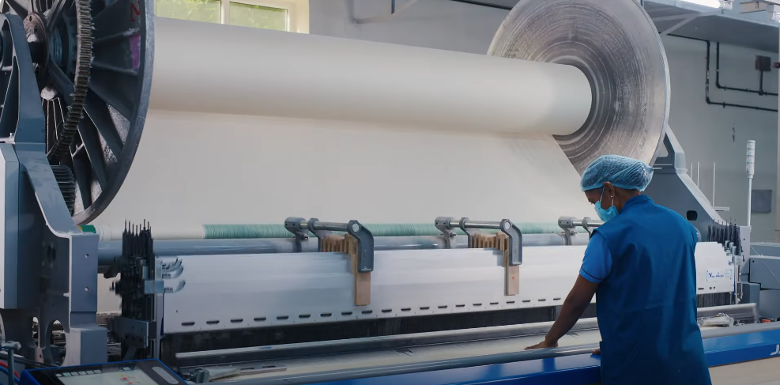
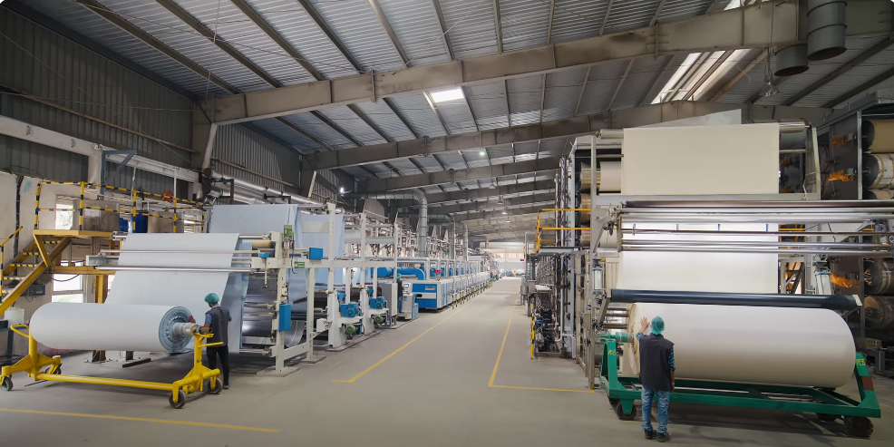
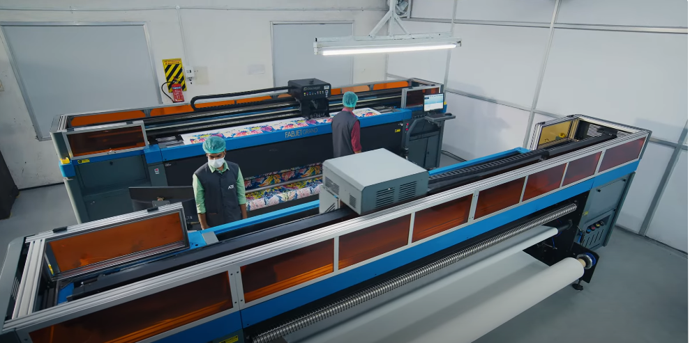
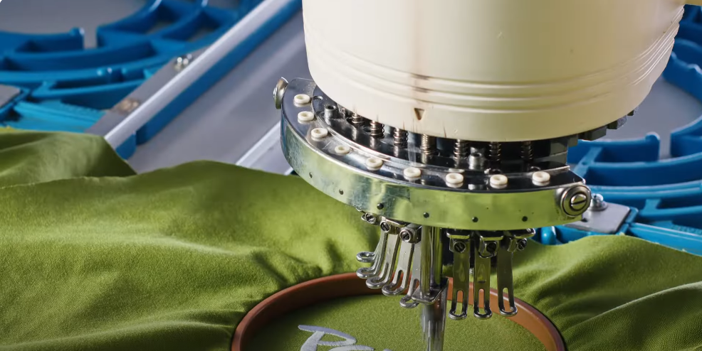
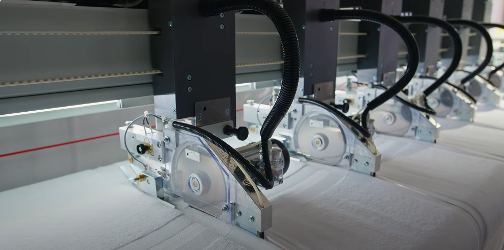
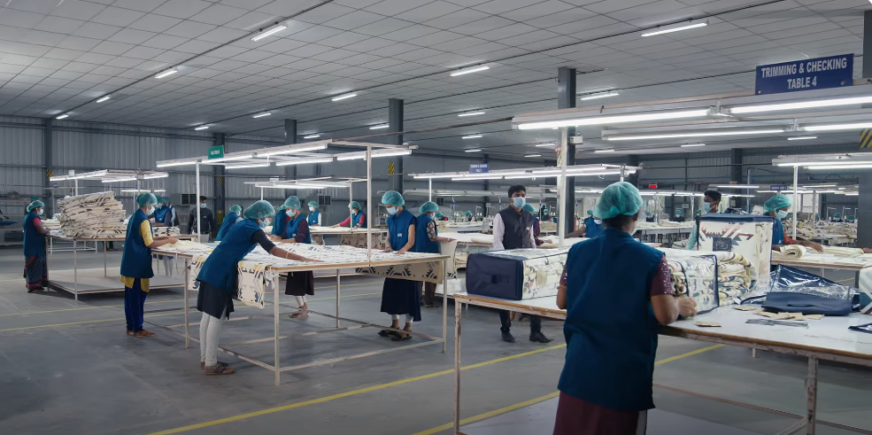

Cotton Ginning
Our story begins with ethically sourced, carefully grown cotton from farmers known for quality and responsible farming.
Our ginning division combines traditional methods and modern technology to clean, sort, and press cotton into bales for further processing.
What we do:
- Procure premium cotton from ethical farms
- Clean and sort cotton using automated machines
- Press the cotton into high-quality bales for processing
Customer Benefits:
- Quality control from the source
- Clean and uniform raw material
- Traceable and ethical sourcing

Spinning
As threads spin together, strength and
softness balance effortlessly, flowing with
power and grace. The result is a product
that embodies precision and excellence in
every fiber. We produce quality yarns in
various blends at our in-house world-class
facility that include Compact Spinning,
Open End Spinning and Vortex Airjet
Spinning.
What we do:
- Create blends suited for multiple industries
- Maintain precision across every lot
- Offer customization for yarn specs
Customer Benefits:
- Versatile yarn options
- High tensile strength
- Softness and durability for end products

Sizing & Warping
The growing global demand for high
quality woven cotton, led us to invest in
cutting-edge technology. Our state-of-the
art Karl Mayer Sizing and Warping
machines now ensure that production
demands are met with precision, while
staying committed to unmatched quality.
What we do:
- Apply size to strengthen yarn
- Warp threads onto beams with precision
- Prepare for continuous loom operation
Customer Benefits:
- Reduced production delays
- Uniform fabric structure
- Superior weaving performance

Weaving
Threads intertwine here at the weaving
division to craft a fabric that is elegant and
resilient. Each movement enhances the
texture, resulting in a fabric that exudes
both finesse and durability. Our vibrant
collection of luxury fabrics celebrates
diversity, offering an exquisite range of
GSM and thread counts. Crafted on state
of-the-art Air-jet, Rapier, and Projectile
Looms, these fabrics invite everyone to
indulge in a tapestry of pride and
individuality.
What we do:
- Weave a range of GSMs and thread counts
- Produce fabrics for home, hospitality, and healthcare
- Focus on both durability and design
Customer Benefits:
- Elegant and strong fabric
- Fully customizable textures and patterns
- Suitable for demanding environments

Dyeing & Finishing
Color comes to life here. With Osthoff Singeing, CBR, Mercerizing, and CDR machines, we ensure vibrant, lasting dyes.
What we do:
- Remove impurities and improve absorbency
- Dye using reactive, VAT, or disperse dyes
- Ensure colour consistency batch after batch
Customer Benefits:
- Long-lasting colours
- Smooth fabric feel
- Eco-friendly processes

Printing
Leveraging advanced technology, our
design and development team delivers
high-quality printed fabric with
immaculate results and superior print
quality. We ensure consistent and top-tier
products through cutting-edge automated
Digital and Rotary printing processes.
What we do:
- Convert customer artwork into printed textiles
- Handle structured fabrics and multiple batch sizes
- Use CAD for pattern perfection
Customer Benefits:
- High-resolution prints
- Brand personalization
- Large or small order flexibility

Quilting
Fully automatic three multi-needle quilting
machines from Rich peace create intricate
quilt designs continuously with their 64
needles in our fabric. that offers a plush
and luxurious feel.
Embroidery
Our advanced lineup of embroidery
machines enables you to reproduce
designs and artwork with the finest detail
with limitless quality and creativity to suit
each customer needs.
What we do:
- Add texture and dimension to fabric
- Quilt with up to 64 needles in complex patterns
- Embroider logos, motifs, or decorative elements
Customer Benefits:
- Perfect for bedding and decor
- Custom branding and detailing
- Long-lasting craftsmanship

Cutting
Each cut, defines the unique identity of the
industries we serve. Every piece is tailored
to blend functionality with design,
ensuring precision and customization to
meet specific needs. Every creation fits its
vision perfectly, regardless of the industry.
Stitching
Stitch by stitch, the fabric takes shape,
each line a mark of skill and artistry.
Threads weave strength and refinement,
tailored to meet the diverse needs of
industries.
With unmatched versatility, the fabric
unlocks infinite possibilities, adapting
seamlessly to every need.
Washing
Our modernised washing unit, featuring
the latest machines, offers a range of
garment wash options. Our facility
enhances the product in terms of aesthetic
and tactile appeal, besides offering value
for money to the end user.
What we do:
- Automated cutting and sewing
- Create ready-made products for multiple sectors
- Follow industry-specific standards
Customer Benefits:
- Save time on post-production
- Custom-fitted to your needs
- Uniform and scalable production

Quality Control
The ATK Group's growth is driven by our
ability to meet diverse needs, ranging from
regional demands to international trends.
Each piece of fabric is carefully examined
to ensure perfection. This meticulous
process reveals a timeless quality that
stands strong and enduring.
What we do:
- Fabric strength, shrinkage, and color fastness tests
- Track traceability across production
- Final inspections before dispatch
Customer Benefits:
- Zero-defect delivery
- Confidence in every order
- Global compliance and certifications
Sustainable Manufacturing
All of this is carefully designed and
executed with sustainability at its heart,
contributing to a better tomorrow from a
fully equipped Zero Liquid Discharge plant
with a daily capacity of 1.5 million litres.
What we do:
- Recycle 100% of our water
- Use solar and wind to power operations
- Minimize carbon footprint
Customer Benefits:
- Eco-conscious sourcing
- Compliant with international green standards
- Align your brand with sustainability